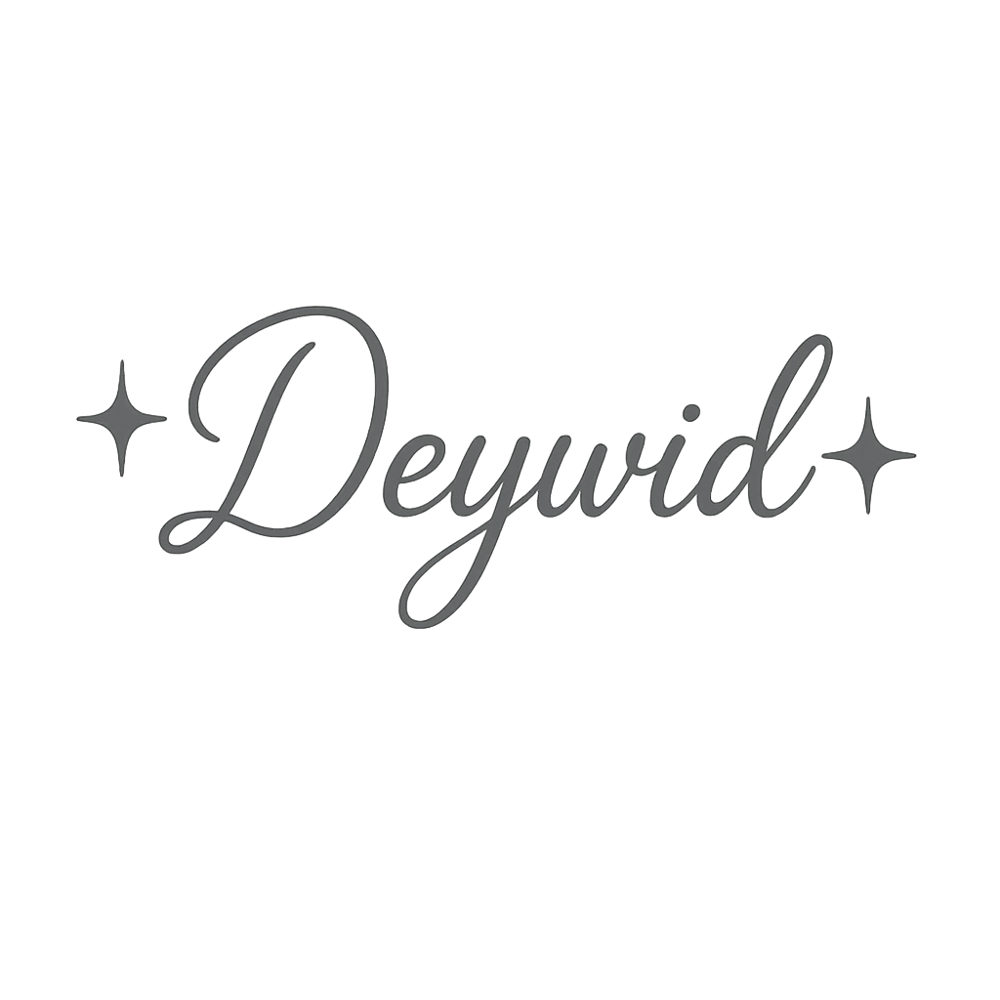

Sou um entusiasta da programação em busca de oportunidades para aprimorar minhas habilidades e contribuir
para projetos inovadores.
Procuro um ambiente profissional dinâmico para aplicar meu conhecimento e me aprimorar como profissional
na área de tecnologia.
HTML - Básico
CSS - Básico
Python - Intermediário
Português - Nativo
Inglês - Avançado
Espanhol - Intermediário
(51) 9 9922-0427
R. Dom Pedro II, 325-465 - Torres, RS, 95560-000
Análise e Desenvolvimento de Sistemas | 2025 - Atualmente
Ensino Médio | 2019 - 2020
Recepcionista Imbituba, Santa Catarina | 11/2024 - 02/2025
Experiência no atendimento a hóspedes, realizando check-in, check-out, reservas e orientações sobre serviços e atrações locais. Habilidade em lidar com diferentes perfis de público, solucionando demandas com cordialidade e eficiência. Organização de rotinas administrativas, controle de pagamentos e uso de sistemas de gestão hoteleira, sempre prezando pela excelência no acolhimento e pela boa experiência do cliente.
Atendente de Filial Garopaba, SC, Santa Catarina | 04/2024 - 10/2024
Experiência no atendimento ao cliente em farmácia, com foco na orientação sobre produtos, fechamento de vendas e qualidade no serviço. Atuação em rotinas operacionais como controle de estoque, conferência de mercadorias, caixa e suporte a novos colaboradores, garantindo conformidade e satisfação do cliente.
P.O Cachoeirinha - RS, Rio Grande do Sul | 02/2022 - 12/2023
Experiência em prestação de serviços remotos, com foco em comunicação eficiente, organização da rotina, cumprimento de prazos e atendimento ao cliente. Atuação voltada para a execução de tarefas com atenção aos detalhes e qualidade nas entregas.
Auxiliar de Depósito Torres, Rio Grande do Sul | 08/2021 - 02/2022
Experiência em logística e rotinas de depósito, atuando na movimentação, conferência e organização de mercadorias. Habilidade no controle de produtos, separação para devolução e manutenção da ordem no ambiente de trabalho, com foco na eficiência operacional.
